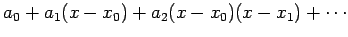
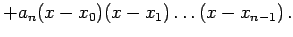
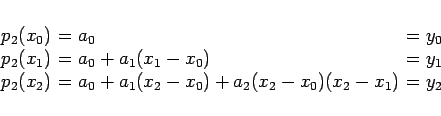

Inhalt Index DeskTop Bronstein

 Numerische Mathematik Approximation, Ausgleichsrechnung, Harmonische Analyse Polynominterpolation
Numerische Mathematik Approximation, Ausgleichsrechnung, Harmonische Analyse Polynominterpolation


Zur Lösung der Interpolationsaufgabe (19.156) wird ein Polynom vom Grade n in der folgenden Form angesetzt:
| g(x) = pn(x) | = |  | |
|  | (19.157) |
| Beispiel |
|
Für n=2 erhält man aus (19.156) das folgende Gleichungssystem: 
Die Berechnung von Funktionswerten kann in einfacher Weise mit Hilfe des HORNER- Schemas erfolgen. |